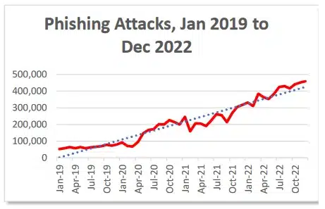

If you are here, don't feel bad! Phishing is the most common form of cyber attack for a reason. It works. The purpose of this exercise is to help you better understand the impact of phishing and how to identify and avoid it in the future. There will be some information on phishing, how to identify some of the signs, and good practices below.
Phishing attacks account for a total of 36% of ALL data breaches in the US. This makes it one of the most common forms of attack to cause a breach. There was a total of 300,497 phishing attacks reported in the US during 2022 alone. Globally, there was over 500 million total phishing attacks reported. This number has only grown with time. The fact phishing is still so common means it still works. Below are some methods to identify some of the signs of a phishing email.
Business related matters are usually done through their respective domains, such as example@asu.edu for Arizona State University emails. Attackers will try to impersonate legitimate employees by using a public domain accessible to them instead, such as Gmail. An example would be if someone's email was abcde@asu.edu, the attacker would try to use the email abcde@gmail.com to impersonate the employee. Sometimes attackers are able to setup email servers to impersonate domains. Be on the lookout for misspelled domains, such as abcde@assu.com, as well. If a coworker is trying to use an outside domain for business, politely ask them to use the proper domain.
When receiving a phishing email, a lot will have links attatched or embedded. Before clicking on a link, be sure to hover over it and view the actual link. Usually if it does not start with https:// or is just an IP address the link is illegitimate.
A general rule of thumb is to not download anything you are not expecting. Unless you were expecting the file do not download it without first contacting who you presumed sent it and ensuring its legitimacy. Also look for things such as weird file names like xygcuuygxg.pdf (this is the real name of a file I was sent during a phish), which would normally be named in a business context.
When the email is specifically impersonating someone, think of the tone that person takes when usually sending emails to see if it is out of order. Things such as a sign off signature missing or a strange start to an email should strike suspicion. For exmaple, my boss loves using emojis, I have never seen an email they sent without one. If I receive an email with no emojis from them, I would double check to authenticate.
Since attackers are often sending the same email to various victims, emails will often start with "Dear Employee" or "Dear Valued Customer" so they can reuse it.
Usually attackers will try to create a sense of urgency to get results as soon as possible. This is different from your usual boss giving you a deadline. The attacker will say they need you to submit personal information or click on a certain link AS SOON AS POSSIBLE OR ELSE to scare you into clicking the link instead of ignoring it and authenticating its legitimacy. They will use threats such as "Your account will be locked if you do not click on this link" for common services such as AppleID.
We have all made the occasional grammar or spelling mistake when sending an email, but often we will only overlook minor ones. Emails are often heavily reviewed and revised. In attacker emails, sometimes there will be various mistakes within one email.
If your boss is asking you for the password to the bank account and avoiding usual process, you should tread carefully. Attackers will often try to get you to directly send sensitive information. You should also never send your own account information to anyone. Unless you are working with IT where they require account information they for some reason can't get, anyone requesting your identification is most likely trying to compromise your account.
Phishing emails will often contain one or more of these signs. There are several more signs to phishing that are not listed. I recommend reading the links below to learn more about it. When encountering a any suspicious email, be sure to report it to your System Administrators. Do not do anything further with it after. Do not reopen it, do not mess around with the link attatched. Often times just clicking on a link can be enough to compromise a system.
Here are some links on phishing and my sources,